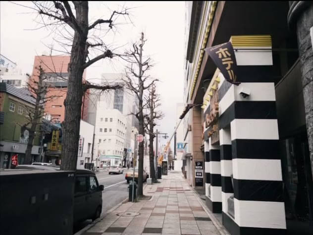

RfCamera Guides & Stories
Comprehensive guides on 35mm rangefinders, analog film recipes, optical physics, and privacy-first camera architecture.
 Camera Guides
Camera Guides
Top 7 Free Dazz Cam Alternatives for Android and iOS (No Subscriptions)
Looking for the best free Dazz Cam alternative? Discover vintage film camera apps with authentic 35mm grain, light leaks, and zero subscription paywalls.

Camera GuidesFXN 35mm Rangefinder Guide: Warm Tones, Smooth Skin & Leica Leaf Shutter
Master the legendary FXN 35mm rangefinder camera emulation: optical characteristics, color matrix tuning, skin tone rendering, and golden hour setups.
 Camera Guides
Camera Guides
CPM35: The 90s Disposable Camera Aesthetic & Light Leak Mastery
How the CPM35 single-use camera simulation creates punchy contrast, vibrant saturated primaries, and warm corner light leaks for vintage summer memories.
GR D Black & White: Street Photography Tips with High-Contrast Film
Learn how to capture dramatic, timeless monochrome street photographs using the GR D camera profile with deep vignettes and micro grain.
CT2R: 1970s Instant Polaroid Color Cast & Square Framing
Recreate the dreamy, nostalgic pastel colors of 1970s instant film with the CT2R profile: cyan-green shadow casts, soft contrast, and square ratio.
 Camera Guides
Camera Guides
S 67 Medium Format: Unlocking Massive 6x7 Tonal Depth on Mobile
Experience the legendary Pentax 6x7 medium format camera look with ultra-smooth tonal transitions and sharp edge-to-edge resolution.
 Camera Guides
Camera Guides
D Half: 72-Frame Half-Frame Photography & Vertical Diptych Storytelling
Discover the creative power of half-frame 35mm cameras. Shoot paired vertical diptychs and tell cinematic dual-frame visual stories.
The Y2K CCD Camera Trend: Why Gen Z Loves Early 2000s Digicams
Explore why early CCD digital cameras are trending on TikTok and how the CCD profile in RfCamera delivers the authentic Y2K aesthetic.
 Tech & Privacy
Tech & Privacy
Why Your Camera App Should Never Require Internet Permissions
Explore the critical privacy risks of cloud-connected camera apps and why 100% offline image processing is the future of personal photography.
 Tech & Privacy
Tech & Privacy
Under the Hood: How Real-Time GLSL Shaders Simulate 35mm Film Grain
A deep dive into mobile computer graphics: how fragment shaders, chromatic aberration, and highlight shoulder curves create genuine analog warmth.
Tokyo Golden Hour: The Ultimate Film Recipe for Warm Sunset Shots
Recreate the golden glow of late afternoon sunlight with the FXN 35mm recipe: warm color shifts, fine silk grain, and amber date stamps.
Analog Culture
The Psychology of Sound: Why Mechanical Shutter Clicks Make You Shoot Better
How physical leaf shutters, winding gears, and tactile haptic feedback transform smartphone photography from a passive screen tap into an art form.
Street & Technique
Vintage Flash Photography: Achieving the 90s Editorial Party Look
Direct flash photography is back. Learn how to balance hard light with warm film tones for striking party and fashion portraits.
The Anti-AI Aesthetic: Why Creators Prefer Imperfect Analog Photos
In an era of hyper-filtered AI images, unedited film grain, light leaks, and honest optical flaws are the new definition of authenticity.
Street & Technique
Travel Light: Document Your Entire Vacation with an Offline Film App
Leave heavy gear and airport X-ray worries behind. Learn how to capture timeless vintage travel diaries with RfCamera.
Camera Guides
Top App Chụp Ảnh Màu Film Đẹp Nhất 2026 (Miễn Phí, Không Thu Phí Thuê Bao)
Đánh giá chi tiết các ứng dụng chụp ảnh máy film analog đẹp nhất: Khung ngắm 35mm sống động, hạt grain mịn màng, không quảng cáo và mở khóa sẵn toàn bộ máy.
Công Thức Chụp Ảnh Tone Màu Film Hongkong Thập Niên 1980 Siêu Nghệ
Bí quyết chụp ảnh màu film Hongkong ấm áp, da sáng mịn màng và dải tương phản dịu bằng thân máy FXN trên RfCamera.
Camera Guides
Cách Chụp Ảnh Máy Film Dùng 1 Lần (Disposable Camera) Lóa Sáng Cực Đẹp
Hướng dẫn sử dụng máy CPM35 để tạo ra những bức ảnh mùa hè rực rỡ với vệt lóa sáng cam (light leak) đặc trưng của máy ảnh dùng một lần.
Nghệ Thuật Chụp Ảnh Đen Trắng Đường Phố Sâu Thẳm Với GR D
Khám phá phong cách nhiếp ảnh đường phố đen trắng tương phản cao, viền tối sắc nét và hạt grain đậm chất nghệ thuật.
Tech & Privacy
Bảo Vệ Quyền Riêng Tư: Tại Sao App Chụp Ảnh Không Nên Xin Quyền Internet?
Phân tích rủi ro bảo mật khi ứng dụng máy ảnh tải ảnh cá nhân lên máy chủ đám mây và lý do kiến trúc 100% Offline của RfCamera là an toàn tuyệt đối.
Camera Guides
D Half: Trải Nghiệm Chụp Máy Film Half-Frame Ghép Đôi 72 Kiểu
Hướng dẫn sáng tạo câu chuyện ảnh đôi dọc (diptych) với thân máy D Half — nhân đôi số lượng ảnh và tạo cảm giác điện ảnh.
Creative Polaroid Guide: 7 Tips for Shooting Dreamy Instant Film
Explore creative techniques for instant film photography: composition, lighting, and square framing.
Camera Guides
Pentax 67 Emulation: Mastering Editorial Medium Format Portraits
How to achieve massive depth of field and creamy skin transitions with the S 67 camera.
Camera Guides
The Art of Half-Frame: Visual Storytelling with Paired Diptychs
Learn how to compose two vertical frames to tell richer photographic narratives.
Why Early 2000s Digicams with CCD Sensors Are Dominating Feeds
The technical and cultural reasons behind the explosion of Y2K digital camera looks.
CineStill 800T Night Recipe: Capturing Glowing Red Neon Halation
Step-by-step recipe for recreating cinema tungsten film halation and glowing lights at night.
Film Recipes
Kodachrome 64 Travel Recipe: Bold Red-Yellows & Timeless Contrast
Recreate the iconic National Geographic travel look of the 1970s and 80s on your phone.
Ilford HP5 Plus: Pushed Grain Recipe for Moody Rainy Street Scenes
How high-contrast pushed black and white film captures dramatic urban textures.
Fuji Superia 400: The Secret to Japanese Film Greens & Cool Shadows
Master the clean, breezy Japanese film photography aesthetic with soft emerald shadows.
Film Recipes
Kodak Portra 400: Achieving Flawless Skin Tones & Pastel Highlights
The gold standard portrait film recipe: natural skin rendering and gentle highlight roll-off.
Tech & Privacy
How We Synthesized 6 Physical Leaf Shutter Sounds in Web Audio
A sound engineering breakdown of mechanical camera acoustics, spring snaps, and gear clicks.
Tech & Privacy
Simulating Lens Curvature: Radial Barrel Distortion in GLSL
How fragment shaders calculate non-linear optical distortion without blurring central sharpness.
Tech & Privacy
Highlight Shoulder Roll-off: Why Film Never Clips Like Digital
An optical deep dive into S-curve shoulder compression and highlight preservation.
Tech & Privacy
Zero UI Stutter: Multi-Threaded Dart Isolates for 12MP JPEG Baking
How background worker isolates process heavy image matrices without dropping 60fps frames.
Tech & Privacy
Security Audit: Building a Production Camera App with 0 Internet Perms
Why zero-permission architecture protects user privacy against data leaks and telemetry.
Analog Culture
The Anti-AI Movement: Why Human Photographers Choose Analog Flaws
Why unedited grain, dust, and optical flares represent authentic human creativity.
Analog Culture
Tangible Software: Designing Digital Tools that Feel Like Mechanical Gear
Why physical knobs, realistic rangefinder viewfinders, and haptic clicks matter in UI design.
35mm Rangefinder Composition: 5 Rules for Fast Street Photography
How frame lines and peripheral vision help street photographers capture decisive moments.
Street & Technique
Direct Flash Mastery: Capturing High-Energy 90s Nightclub Portraits
How on-camera flash creates bold shadows, vibrant saturation, and authentic party candids.
Golden Hour Backlighting: How to Prevent Lens Flares from Washing Out
Balancing warm rim light with fill exposure using rangefinder optical compensation.
Urban Geometry: Framing Repetitive Lines and Shadows on Analog Film
Using architectural lines, staircases, and window shadows for striking minimalist shots.
Bí Quyết Chụp Ảnh Polaroid Vuông Cực Nghệ Cho Người Mới
Hướng dẫn chọn góc sáng, cân bằng bố cục 1:1 và bắt trọn cảm xúc hoài niệm thập niên 70.
Thân máy & Kỹ thuật
Nhiếp Ảnh Chân Dung Khổ Trung 6x7: Đẳng Cấp Chi Tiết Sắc Nét
Khai thác độ sâu trường ảnh mê hoặc và dải chuyển màu mịn màng của máy ảnh Pentax 67.
Thân máy & Kỹ thuật
Sáng Tạo Ảnh Đôi Dọc (Diptych): Kể Câu Chuyện Điện Ảnh 2 Khung Hình
Cách phối hợp 2 góc máy cận và toàn cảnh để tạo nên bức ảnh ghép đôi giàu cảm xúc.
Cơn Sốt Máy Ảnh CCD Y2K: Vì Sao Gen Z Đang Rời Xa Camera AI?
Giải mã sức hút của màu sắc rực rỡ và cảm giác ảnh kỹ thuật số đầu những năm 2000.
Công Thức Màu Phim Đêm CineStill 800T Vệt Đỏ Quanh Đèn Neon
Bí quyết chụp phố đêm với vệt lóa sáng đỏ cam (halation) huyền ảo quanh biển hiệu neon.
Công thức chụp ảnh
Công Thức Kodachrome 64: Sắc Đỏ Vàng Kinh Điển Của Ảnh Du Lịch
Tái hiện chất màu phim tài liệu National Geographic rực rỡ và ấm áp cho kỳ nghỉ.
Chụp Ảnh Đen Trắng Ngày Mưa: Tương Phản Gắt Và Hạt Bạc Sống Động
Cách khai thác phản chiếu mặt đường ướt và ánh sáng âm u để tạo nên ảnh monochrome kịch tính.
Tone Màu Xanh Lá Fuji: Bí Quyết Chụp Ảnh Phong Cách Nhật Bản Trong Trẻo
Hướng dẫn chụp tone màu pastel nhẹ nhàng với bóng tối xanh ngọc bích thanh lịch.
Công thức chụp ảnh
Công Thức Kodak Portra 400: Da Mịn Tự Nhiên Và Nắng Vàng Nhẹ
Chuẩn mực nhiếp ảnh chân dung: giữ trọn chi tiết khuôn mặt và sắc độ da mềm mại.
Bảo mật & Công nghệ
Thiết Kế Âm Thanh Màn Trập: Mô Phỏng Cơ Khí Lá Thép Và Bánh Răng
Bên trong bộ tổng hợp âm thanh Web Audio: tái hiện tiếng tách đanh giòn của màn trập máy ảnh.
Bảo mật & Công nghệ
Mô Phỏng Độ Méo Thấu Kính Bằng Fragment Shader GLSL 60fps
Cách shader tính toán độ cong quang học và tán sắc viền (chromatic aberration) thời gian thực.
Bảo mật & Công nghệ
Vùng Nén Sáng Quang Học: Vì Sao Ảnh Film Không Bao Giờ Cháy Sáng
Phân tích đường cong nén sáng S-curve giúp bảo toàn chi tiết mây trời trên ảnh analog.
Bảo mật & Công nghệ
Xử Lý Ảnh Bằng Dart Isolate: Tráng Ảnh 12MP Trong 200ms
Kiến trúc luồng xử lý nền giúp chụp ảnh liên tục mà không làm khựng khung ngắm 60fps.
Bảo mật & Công nghệ
Kiểm Định Bảo Mật: Vì Sao App Máy Ảnh Không Nên Xin Quyền Internet?
Cam kết 0 quyền mạng ở cấp hệ điều hành bảo vệ tuyệt đối kho ảnh riêng tư của bạn.
Văn hóa Retro
Trào Lưu 'Anti-AI': Khi Người Trẻ Khao Khát Những Tì Vết Chân Thật
Vì sao hạt grain sần sùi và vệt lóa sáng ngẫu nhiên lại trở thành biểu tượng của sự chân thành.
Văn hóa Retro
Triết Lý Phần Mềm Cơ Học: Khi Giao Diện Số Có Trọng Lượng Xúc Giác
Tại sao nút bấm vật lý, vạch chia quang học và phản hồi rung làm tăng cảm hứng sáng tác.
Bố Cục Khung Ngắm Rangefinder: 5 Nguyên Tắc Bắt Khoảnh Khắc Thần Tốc
Cách tận dụng tầm nhìn bao quát ngoài khung ngắm để dự đoán chuyển động chủ thể.
Kỹ thuật nhiếp ảnh
Chụp Flash Trực Diện: Tạo Nên Phong Cách Tiệc Đêm 90s Nổi Loạn
Kỹ thuật đánh flash trực tiếp tạo bóng đổ sắc nét và màu sắc bão hòa đầy năng lượng.
Chụp Ngược Sáng Hoàng Hôn: Giữ Viền Sáng Tóc Và Chi Tiết Khuôn Mặt
Cách bù trừ độ sáng EV và tận dụng quầng sáng tán xạ để bức ảnh chiều tà trở nên lung linh.
Hình Khối Đô Thị: Khai Thác Đường Nét Và Bóng Đổ Trong Nhiếp Ảnh Film
Cách sắp xếp các mảng sáng tối và đường dẫn thị giác để tạo nên bức ảnh kiến trúc mạch lạc.